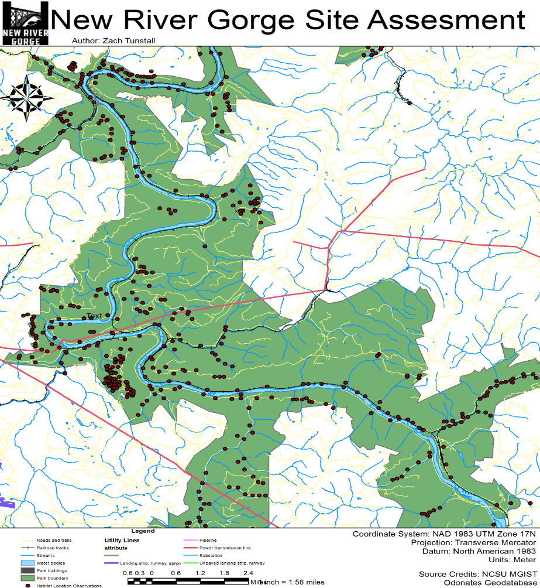

Problem
Due to the black-out of the northeastern United States on August 14, 2003 and Homeland Security issues, the Federal government is investigating possible locations for new high power transmission lines to increase the stability of the United States power grid.
New River Gorge National River is being investigated as one possible location.
As part of the investigation, the effects of a new power transmission line corridor within the park boundary must be assessed.

Procedure
In this project there are variety of stakeholders that require access to the data on the server.
Because of this, we could not host the data using ArcGIS Online Web portal.
A multiuser database is needed for hosting the backend data on a server.
The ownership of this data is a government entity that requires the use of a custom web tool so, the data must be secure, mutable, and comprehensible.
Database design is crucial to building an enterprise geodatabase.
Considerations involve building topology, preserving structure using feature datasets, and the amount of time it takes to utilize geoprocessing over an internet connection.
The provided feature classes and table data were stored using a virtual sandbox environment where a licensed ArcGIS server is used to connect GIS data to the REST service endpoints.
The server is managed and data is hosted using the open source relational database PostgreSQL.

Results
This mapping application features a widget for querying the different species and habitats within the park boundary.
There is also a custom map service tool incorporated in the web application that selects any habitat location within a specified distance to any new proposed utility line the stakeholders wish to draw or propose.
This tool is meant to help stakeholders visualize the potential environmental impacts of creating a new utility line.
Reflection
The complexities of working in the enterprise GIS environment added a significant and valuable skillset to my understanding of GIS web services.
There are many different ways to utilize GIS in a web environment. All of these skills can be used in other web mapping applications.
From building custom map surveys, to making dashboards and creating story apps, there are many different ways to tell a story with interactive spatial data.
Application Link